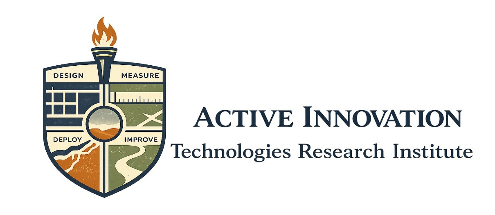
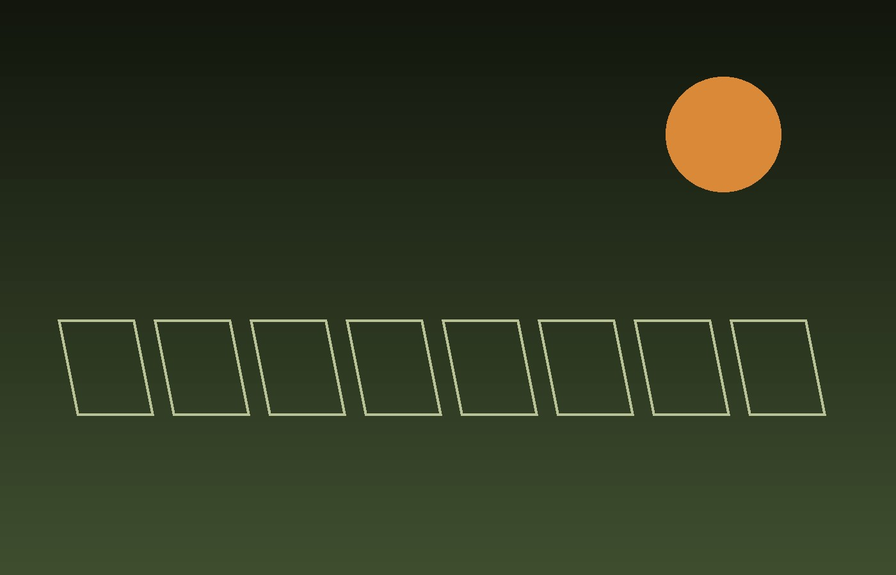
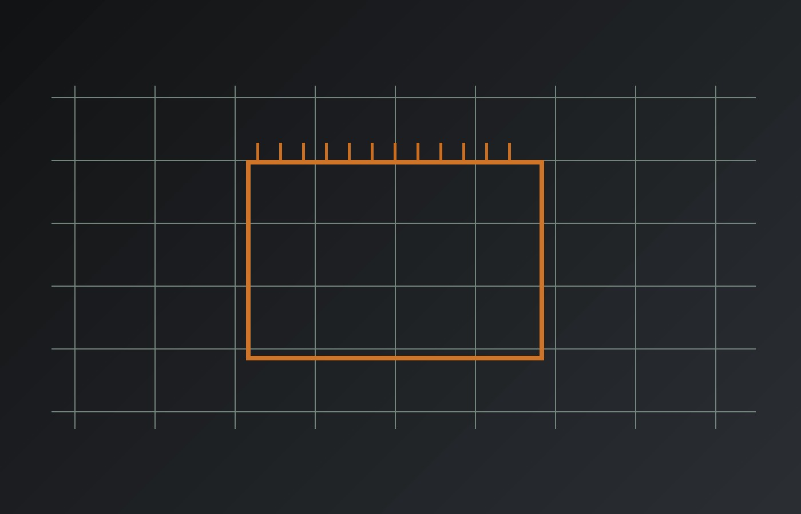
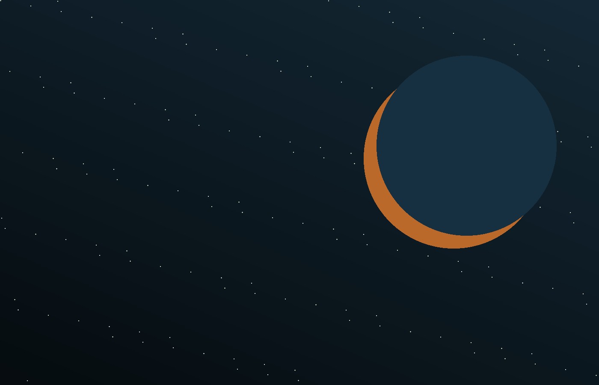

Wireless & Information Systems
Wi‑Fi HaLow, mesh networking, communications, sensing and distributed systems.

Research. Experiment. Innovate. We explore unanswered questions, challenge existing technology and engineer new ideas that move science and technology forward.
SEE WHAT WE'RE BUILDINGEXPLORE IDEASAITRI exists to create, investigate and test what does not exist yet. Research gives us knowledge. Innovation turns that knowledge into new possibilities.
Real experiments. Real hardware. Research that grows through measurement, failure, iteration and discovery.
Resilient monitoring for decentralized solar systems using embedded sensing and long-range networking.

An evolving platform for energy, sensing and autonomous systems.

Connected lighting for sensing, control and distributed intelligence.
Wi‑Fi HaLow, mesh networking, communications, sensing and distributed systems.
Solar, energy monitoring, power electronics and resilient infrastructure.
MCUs, MPUs, RTOS, edge computing and experimental hardware.
Questions worth pursuing even when an immediate application does not exist.
Short, visual entry points into AITRI research, emerging technologies and scientific breakthroughs. Go deeper only when you want to.
 5 MIN · WIRELESS
5 MIN · WIRELESSWhy sub‑GHz Wi‑Fi could matter for the next generation of connected systems.

SCIENCE FRONTIERSA living window into discoveries and emerging technologies around the world.
AITRI NOTESPrototype notes, measurements, failures, discoveries and what comes next.
Jump directly into research and exploration tools from institutions advancing knowledge around the world.
Interactive mission, Earth, asteroid and spacecraft visualizations from NASA Eyes.
NASA SCIENCEExplore current science and technology directly from NASA.
CERNExplore accelerators, experiments and fundamental questions about the universe.
SRIDiscover research spanning computing, health, climate, quantum, security and space.
We believe progress comes from asking difficult questions, building what has not been built, measuring what happens and having the freedom to follow unexpected results.